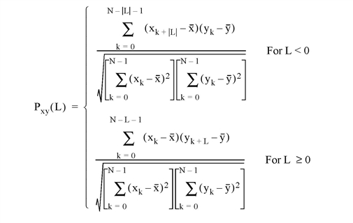
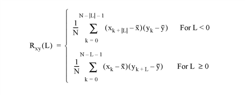

The C_CORRELATE function computes the cross correlation Pxy(L) or cross covariance Rxy(L) of two sample populations X and Y as a function of the lag L


where x and y are the means of the sample populations x = (x0, x1, x2, ... , xN-1) and y = (y0, y1, y2, ... , yN-1), respectively.
This routine is written in the IDL language. Its source code can be found in the file c_correlate.pro in the lib subdirectory of the IDL distribution.
Result = C_CORRELATE( X, Y, Lag [, /COVARIANCE] [, /DOUBLE] )
Returns the cross correlation Pxy(L) or cross covariance Rxy(L) of two sample populations X and Y as a function of the lag L.
An n-element integer, single-, or double-precision floating-point vector.
An n-element integer, single-, or double-precision floating-point vector.
A scalar or n-element integer vector in the interval [-(n-2), (n-2)], specifying the signed distances between indexed elements of X.
Set this keyword to compute the sample cross covariance rather than the sample cross correlation.
Set this keyword to force the computation to be done in double-precision arithmetic.
; Define two n-element sample populations:
X = [3.73, 3.67, 3.77, 3.83, 4.67, 5.87, 6.70, 6.97, 6.40, 5.57]
Y = [2.31, 2.76, 3.02, 3.13, 3.72, 3.88, 3.97, 4.39, 4.34, 3.95]
; Compute the cross correlation of X and Y for LAG = -5, 0, 1, 5,
; 6, 7:
lag = [-5, 0, 1, 5, 6, 7]
result = C_CORRELATE(X, Y, lag)
PRINT, result
IDL prints:
-0.428246 0.914755 0.674547 -0.405140 -0.403100 -0.339685
|
4.0 |
Introduced |
A_CORRELATE , CORRELATE , M_CORRELATE , P_CORRELATE, R_CORRELATE